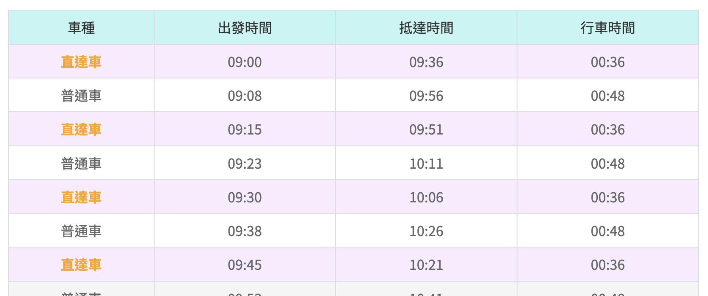
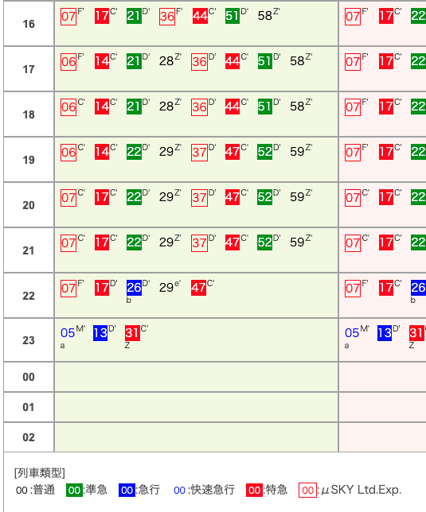

← 回總覽
Day 1 Detail
啟程・前往名古屋
台北 ➔ 名古屋中部國際機場
09:00
準備出門
檢查護照、機票、隨身物品是否帶齊。
(建議再確認一次網卡/漫遊是否設定完成)
09:30
搭乘機場捷運
從台北車站搭乘機場捷運直達車前往桃園機場。

機場捷運時刻表
10:07
抵達第一航廈
辦理報到與行李託運。
12:00
搭乘飛機 (CX530)
國泰航空 Cathay Pacific
TPE (T1) ➔ NGO (T1)
起飛：12:00 (台北)
第一航廈
抵達：16:40 (名古屋)
第一航廈
飛行時間：2小時40分
16:40
抵達名古屋中部國際機場
入境手續、提領行李。
17:30
前往名古屋市區
搭乘
μSKY (ミュースカイ)
特急列車前往名古屋站。
車程：約 28 分鐘
費用：¥980 (乘車券) + ¥450 (μticket) =
¥1,430
備註：全車指定席，需在售票機加購 μticket。

μSKY 特急列車時刻表
18:30
飯店 Check-in
相鐵FRESA INN 名古屋站櫻通口
放置行李，準備出門享用名古屋的第一餐！